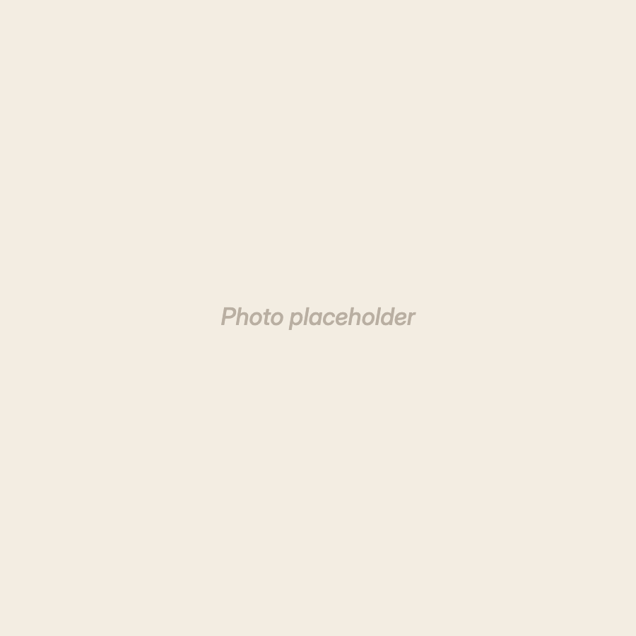

Three pushed screens, each with its empty and loading state beside it. Everything is drawn from the Crumpet system: warm off-white ground, white cards, warm-brown two-layer shadows, Gabarito over Inter.
Gold appears once per screen at most: the Log chip. The teal tick carries "done", and warm ink and the page colour carry everything else.
A missed feed is recessed rather than alarmed — sunk row, hollow ring where the tick would be, secondary ink. Never gold, never red, and the label is always "Not logged".
The tab bar keeps its gold active tint. That is job three of three, and it is chrome rather than screen content — say the word and it goes ink-only on pushed screens.
Photos are the supplied placeholder. Drop real pet photos in and the frames take them as-is; nothing is tinted or filtered.
01
Pet detail
Tap Log on the midday row — the chip fades, the tick lands. The care card opens to edit.

Bailey
Three feed times a day · Logged once today
Feed times
Morning7:00 am
Sarah, 7:04 am
Midday12:30 pm
Due now
Midday12:30 pm
You, just now
Evening5:30 pm
Upcoming
Photos
Care card
Half a cup of dry food morning and evening, a small handful at midday. No table scraps — she will ask.
Pet detail · one logged, one due, one upcoming
Bailey
No feed times yet
Empty · a pet with no schedule
Loading · skeleton in the page colour
02
Activity
Grouped by day. A missed feed recesses instead of shouting.
Activity
Today
Bailey’s morning feed
Sarah, 7:04 am
5 hours ago
Miso’s midday feed
Not logged
12:30 pm
Bailey’s snack
Tom, 10:15 am
2 hours ago
Saturday, 30 August
Bailey’s evening feed
Tom, 5:38 pm
Yesterday
Miso’s morning feed
Sarah, 7:12 am
Yesterday
Activity · two days, one not logged
Activity
Empty · a new household
Activity
Loading · day bands hold their place
03
Pets
One row per pet, one line of status, and a ghost row to add.
Pets
BaileyLogged twice today · next 5:30 pm
MisoMidday feed not logged
Pickle
Pets · three pets, one paused
Pets
Empty · nothing to add to, so one action
Pets
Loading · the ghost row stays outlined
Next: the log tray that opens when a feed is logged late (who and what time), and the Miso row on Activity linked back to the pet so a missed feed can still be logged from history.